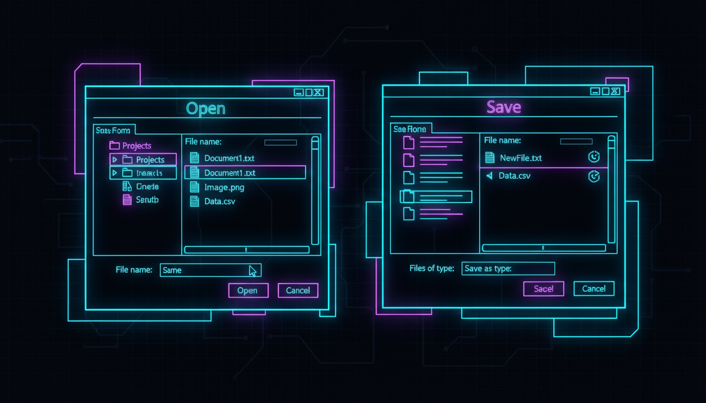

Вибір файлів, фільтри, перевірка існування

// Діалог відкриття файлу
OpenFileDialog^ openDlg = gcnew OpenFileDialog();
openDlg->Title = "Виберіть файл";
openDlg->Filter = "Текстові файли (*.txt)|*.txt|Всі файли (*.*)|*.*";
openDlg->InitialDirectory = Environment::GetFolderPath(
Environment::SpecialFolder::MyDocuments);
openDlg->Multiselect = false;
if (openDlg->ShowDialog() == DialogResult::OK) {
String^ filePath = openDlg->FileName;
String^ content = File::ReadAllText(filePath);
textBox->Text = content;
}// Діалог збереження
SaveFileDialog^ saveDlg = gcnew SaveFileDialog();
saveDlg->Title = "Зберегти файл";
saveDlg->Filter = "Текстові файли (*.txt)|*.txt";
saveDlg->DefaultExt = "txt";
if (saveDlg->ShowDialog() == DialogResult::OK) {
File::WriteAllText(saveDlg->FileName, textBox->Text);
}